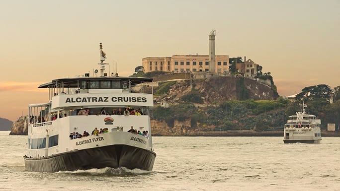

En bref
| Information | Détail |
|---|---|
| Départ | Pier 33, San Francisco |
| Trajet en ferry | Environ 15 minutes |
| Durée sur l'île | 2 à 3 heures |
| Types de visite | Visite de jour ou visite de nuit |
| Réservation | Conseillée plusieurs semaines à l'avance |
| Fermeture | Certains jours fériés (Thanksgiving, Noël, Nouvel An) |
Comment y aller ?

- Rendez-vous au Pier 33, au bord de la baie de San Francisco.
- Présentez votre billet et montez dans le ferry.
- Profitez de la traversée et de la vue sur la ville.
- À l'arrivée, un ranger vous accueille sur le quai.
À prévoir
- ✔ Une veste : il y a souvent du vent et il fait frais sur l'île
- ✔ De bonnes chaussures : le chemin vers la prison est en pente
- ✔ Une bouteille d'eau : il n'y a pas de restaurant sur l'île
- ✔ Un appareil photo : pour la vue sur le Golden Gate Bridge
- ✔ Votre billet imprimé ou sur votre téléphone
Notre conseil
Prenez le premier ferry du matin : il y a moins de monde et la visite est beaucoup plus agréable. Pour une ambiance encore plus spéciale, essayez la visite de nuit !
Retour à l'accueil